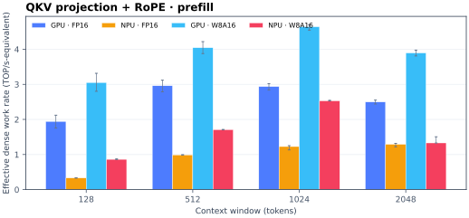
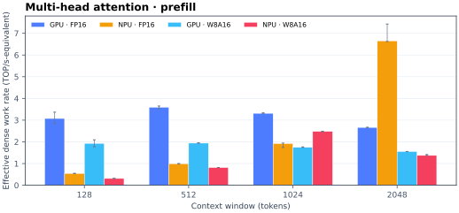
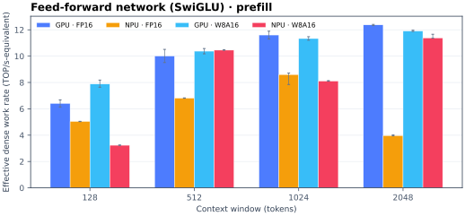
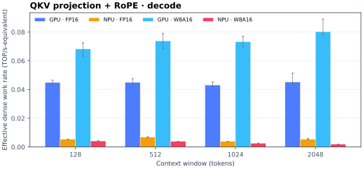
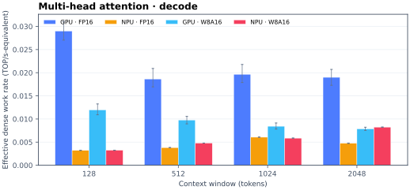
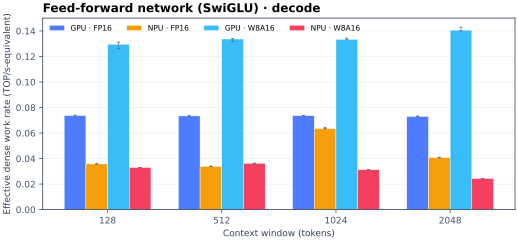
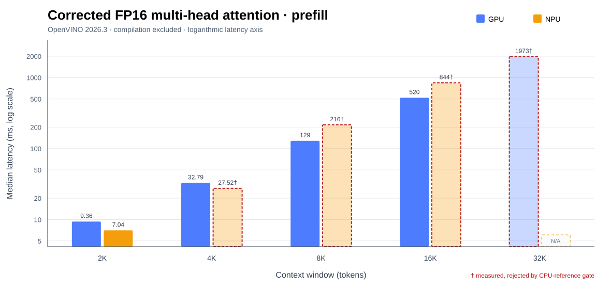
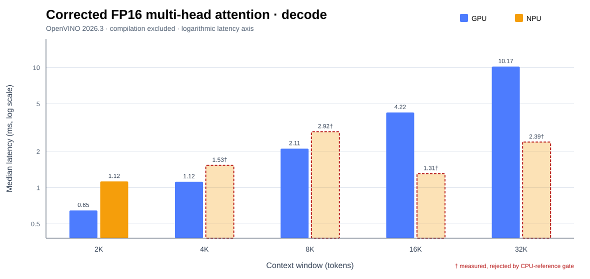
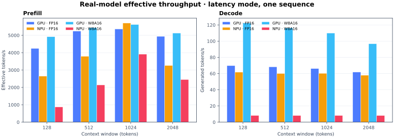
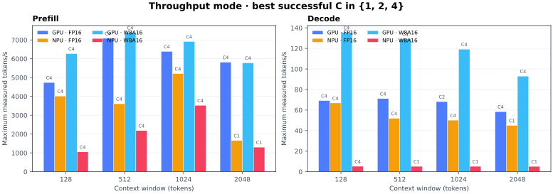

Historical operator study · E2E corrected 7 September 2026
QKV, attention, or FFN: where does the NPU actually win?
Qwen2.5-0.5B on Intel Xe3 iGPU and NPU 5. The original FP16/W8A16 study spans 128–2048 tokens; a new corrected FP16 attention sweep reaches the 32K request bucket. Compilation is excluded.
Validated conclusion: attention affinity is narrow and non-monotonic. Corrected FP16 MHA favors NPU at 2K, but the 4K+ NPU outputs fail the projection correctness gate and 32K NPU compilation times out. Long context is not a validated reason to route attention to NPU on this stack.
3main model blocks
4 / 48NPU block wins
21 × 7wall trials × profile trials
C1 / C2 / C4measured request concurrency
Every main block, every window
The earlier 14-way view was too granular for reliable NPU attribution. These views retain only QKV preparation, multi-head attention, and the SwiGLU FFN. Switch from profile-attributed latency to analytic dense work divided by that latency; the latter captures MHA’s quadratic growth.
GPU FP16NPU FP16GPU INT8NPU INT8










Historical 2.50× result withdrawn: the GPU output was invalid. Corrected standalone W2048 FP16 MHA wall-time speedup: 1.55×; not an E2E speedup.
QKV projection + RoPE, decode W=2048 W8A16: 41.54× faster than NPU.
| Main block | GPU wins | NPU wins |
|---|---|---|
| QKV projection + RoPE | 16 / 16 | 0 / 16 |
| Multi-head attention | 13 / 16 | 3 / 16 |
| Feed-forward network (SwiGLU) | 15 / 16 | 1 / 16 |
Does attention affinity persist to 32K?
This is a new, internally consistent OpenVINO 2026.3 sweep of the corrected FP16 multi-head-attention graph. It keeps a 2K bridge point and extends through 4K, 8K, 16K, and the largest 32K request-compatible bucket (32,736 tokens). GPU and NPU use the identical graph with the projection exposed to block the invalid GPU projection+residual fusion. Compilation is excluded.


NPU wins 1 valid prefill pair and 0 valid decode pairs. A winner is reported only when all three fresh processes succeed and GPU/NPU outputs pass the numerical gate.
2 GPU/NPU output pairs and 11 sampled accelerator/FP32-CPU checks passed; 3 process-level compile or execution failures are shown as N/A and retained in the downloadable failure log.
| Window | Prefill | Decode | ||||
|---|---|---|---|---|---|---|
| GPU | NPU | Winner | GPU | NPU | Winner | |
| 2K | 9.36 ms | 7.04 ms | NPU 1.33× | 0.65 ms | 1.12 ms | GPU 1.74× |
| 4K | 32.79 ms | 27.52 ms † | No valid pair | 1.12 ms | 1.53 ms † | No valid pair |
| 8K | 0.13 s | 0.22 s † | No valid pair | 2.11 ms | 2.92 ms † | No valid pair |
| 16K | 0.52 s | 0.84 s † | No valid pair | 4.22 ms | 1.31 ms † | No valid pair |
| 32K (32,736) | 1.97 s † | N/A | No valid pair | 10.17 ms | 2.39 ms † | No valid pair |
† Rejected diagnostic. The inference completed, but the exposed attention projection failed the fixed CPU-reference gate (cosine ≥0.999 and relative L2 ≤2%). It is shown faintly to expose the failure and is not counted as an affinity win. Method. Three independent compiles per backend/window/stage. Timed repetitions per process: 21 at 2K–4K prefill, 15 at 8K, 9 at 16K, 5 at 32K, and 31 for decode. The y-axis is logarithmic. This is isolated-block affinity, not a claim that GPU↔NPU switching is free.
W=2048 FFN spike: checked
Verdict: the NPU long-window slowdown is real; the old gate/up split was over-interpreted.
Three fresh process-level repetitions reproduced a stable 21.38–21.43 ms full-graph latency at W=2048. NPU profile counters are fused and may overlap, so individual gate/up bars cannot be treated as independent wall times. The defensible signal is the aggregate FFN share, which rises to 63.1%.
| Window | Full graph median | Across-process range | FFN profile share | FFN attributed |
|---|---|---|---|---|
| 1024 | 9.666 ms | 9.659–9.671 ms | 32.1% | 3.10 ms |
| 1536 | 12.956 ms | 12.937–12.978 ms | 42.8% | 5.54 ms |
| 1792 | 17.010 ms | 16.970–17.165 ms | 46.8% | 7.95 ms |
| 2048 | 21.423 ms | 21.384–21.434 ms | 63.1% | 13.50 ms |
Audited end-to-end comparison
Corrected September 7, 2026. Both views below use one September 4 OpenVINO 2026.3 dataset, with identical values and axis scales: a W-token prompt and 32 fixed decode calls. NPU’s compiled prompt limit is W, not W+32 rounded up. Compilation is excluded.

Matching three-series view (same data, hybrid hidden)

| Prompt W | FP16 model system | Request s ↓ | Processed-input tok/s ↑ | Net system J ↓ |
|---|---|---|---|---|
| 128 | GPU e2e | 0.4832 | 331.1 | 13.61 |
| 128 | NPU e2e (native NPUW) | 0.5433 | 294.5 | 9.13 |
| 128 | Compute oracle: withdrawn | N/A — withdrawn, not zero | ||
| 128 | NPUW hybrid (prefill MHA on NPU) | 1.2392 | 129.1 | 35.34 |
| 512 | GPU e2e | 0.5765 | 943.6 | 16.18 |
| 512 | NPU e2e (native NPUW) | 0.5898 | 922.3 | 10.25 |
| 512 | Compute oracle: withdrawn | N/A — withdrawn, not zero | ||
| 512 | NPUW hybrid (prefill MHA on NPU) | 1.3549 | 401.5 | 37.07 |
| 1024 | GPU e2e | 0.6846 | 1,542.5 | 19.89 |
| 1024 | NPU e2e (native NPUW) | 0.6667 | 1,583.9 | 12.25 |
| 1024 | Compute oracle: withdrawn | N/A — withdrawn, not zero | ||
| 1024 | NPUW hybrid (prefill MHA on NPU) | 1.5539 | 679.6 | 43.59 |
| 2048 | GPU e2e | 0.9464 | 2,197.8 | 27.71 |
| 2048 | NPU e2e (native NPUW) | 0.8403 | 2,475.2 | 16.28 |
| 2048 | Compute oracle: withdrawn | N/A — withdrawn, not zero | ||
| 2048 | NPUW hybrid (prefill MHA on NPU) | 1.8547 | 1,121.5 | 57.81 |
Throughput = (W+32)/request seconds. These are teacher-forced model forward calls, not sampled text, output-generation speed or concurrency throughput. “FP16” describes the model; GPU uses its default internal precision policy. Native NPU e2e already uses NPUW; the hybrid adds GPU/NPU partition routing.
Why the previous NPU 2K bars disagreed
The old 1.1815 s bar used OpenVINO 2026.0 and a 4096-token compiled prompt limit. The 0.8403 s bar used 2026.3 and a 2048-token limit. The old chart also reconstructed latency from separate stage medians; it did not time complete requests. A new controlled experiment kept the actual prompt at 2048 and reproduced the difference:
| Runtime | Compiled prompt limit | Whole request | Prefill |
|---|---|---|---|
| 2026.0.0 | 2048 | 0.8813 s | 0.3416 s |
| 2026.0.0 | 4096 | 1.1811 s | 0.6229 s |
| 2026.3.0 | 2048 | 0.8352 s | 0.2957 s |
| 2026.3.0 | 4096 | 0.8423 s | 0.2994 s |
Each control cell: 3 fresh processes × 5 timed requests. All 12 final-logit checks passed. Runtime and capacity interact: 2026.3 stays near 0.84 s at either limit. These September 7 controls are kept separate from the September 4 baseline and energy data.
Numeric compute oracle withdrawn
The former green bars reused an invalid-output GPU attention trace and mixed historical block shares with a newer full-model baseline. Removing launch/layout/DMA from one ratio did not remove them from the full-model anchor. The energy estimate was unsupported too. N/A means unavailable—not zero latency or zero energy. A valid fused-compute oracle requires new correctness-gated, same-runtime profiling.
Audit scope. Rechecked 48 accepted processes / 240 timed requests: inputs, settings, timing samples, energy arithmetic and final logits. Minimum cosine 0.999743, matching top-1 and top-5 sets; this is not all-token or model-quality validation. Whiskers show the range of three process medians, not confidence intervals.
Energy scope. RAPL psys, minus an 8.617 W idle baseline, measured over separate five-request windows. Energy includes state reset and CPU output summaries that the latency timer excludes. It is system energy, not accelerator-only energy; historical cross-date energy values are not interchangeable.
Historical stage throughput · OpenVINO 2026.0
For the conventional split view, prefill is prompt tokens/s and decode is generated tokens/s for one sequence.

| Window | Precision | GPU prefill tok/s | NPU prefill tok/s | GPU decode tok/s | NPU decode tok/s |
|---|---|---|---|---|---|
| 128 | FP16 | 4,240 | 2,647 | 69.7 | 61.7 |
| 128 | W8A16 | 4,917 | 872 | 122.2 | 8.2 |
| 512 | FP16 | 5,240 | 3,790 | 68.3 | 60.0 |
| 512 | W8A16 | 5,434 | 2,142 | 116.3 | 8.1 |
| 1024 | FP16 | 5,362 | 5,701 | 66.1 | 60.2 |
| 1024 | W8A16 | 5,618 | 3,915 | 109.9 | 8.2 |
| 2048 | FP16 | 4,937 | 3,260 | 61.8 | 57.8 |
| 2048 | W8A16 | 5,126 | 2,451 | 96.7 | 8.1 |
Historical concurrency sweep · separate protocol
This is a separate real-model run with OpenVINO’s throughput hint and independent stateful sequences. Each bar is the best successful result among C=1, 2, and 4, with the winning concurrency printed above it. It is the maximum inside the tested range—not an unbounded hardware peak.

| Window | Precision | GPU prefill tok/s · C | NPU prefill tok/s · C | GPU decode tok/s · C | NPU decode tok/s · C |
|---|---|---|---|---|---|
| 128 | FP16 | 4,738 · C4 | 4,018 · C4 | 69.1 · C4 | 66.9 · C4 |
| 128 | W8A16 | 6,270 · C4 | 1,050 · C4 | 135.5 · C4 | 5.3 · C4 |
| 512 | FP16 | 7,086 · C4 | 3,607 · C4 | 71.2 · C4 | 52.0 · C4 |
| 512 | W8A16 | 7,394 · C4 | 2,183 · C4 | 129.1 · C4 | 5.3 · C1 |
| 1024 | FP16 | 6,388 · C4 | 5,211 · C4 | 68.2 · C2 | 50.1 · C4 |
| 1024 | W8A16 | 6,912 · C4 | 3,526 · C4 | 119.3 · C4 | 5.2 · C1 |
| 2048 | FP16 | 5,815 · C4 | 1,655 · C1 | 58.5 · C4 | 45.0 · C1 |
| 2048 | W8A16 | 5,781 · C4 | 1,303 · C1 | 93.0 · C4 | 5.2 · C1 |
Problems and caveats
NPU profiling counters can overlap or be fused. The block bars apportion full-graph wall time; they are not independently runnable kernel latencies.
It ignores synchronization, tensor transfer, layout conversion, and recompilation boundaries. Any real scheduler must beat those costs.
It applies measured stage-average net system power to routed block time. Per-block power can differ, so the previous green energy bars have been withdrawn; historical files are not current predictions.
Weights are post-training INT8 while activations remain FP16. Results should not be labeled as integer-only execution.
One Qwen2.5-0.5B shape, one NUC16 software stack, static windows, and native NPU. Affinity is not portable without remeasurement.
The profile graph represents one realistic layer plus boundaries; the oracle scales its block shares to the measured 24-layer model, so it is an opportunity estimate.
The maximum is only over C=1/2/4 in one process. 23 of 96 stateful concurrency points failed in the GPU/NPU runtime and are retained in the download, not silently converted to slow bars.